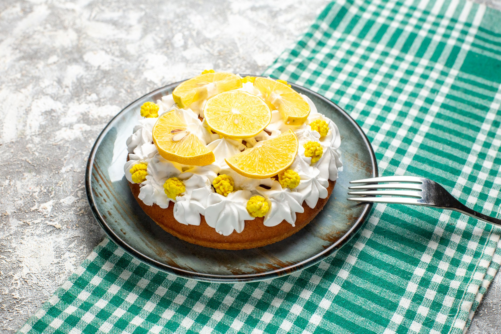

Home
Lemon Icebox Pie

Description
This lemon icebox pie is a family favorite when a no-bake, fast pie is needed. And family members too small to use the oven can make dessert! This makes a very pretty dessert when garnished with whipped cream and mint leaves.
Ingredients
- 1 (9-inch) prepared graham cracker crust
- 2 (8 ounce) packages cream cheese, softened
- 1 (14 ounce) can sweetened condensed milk
- 2 lemons, juiced
- 1 teaspoon lemon zest
- whipped cream for garnish (Optional)
- fresh mint leaves for garnish (Optional)
Steps
- Gather all ingredients.
- Beat cream cheese in a medium mixing bowl until fluffy. Add condensed milk, lemon juice, and lemon rind; mix until smooth.
- Pour lemon mixture into crust. Refrigerate at least 2 hours before serving.
- Garnish with whipped cream and mint leaves if desired.
- Slice and serve.